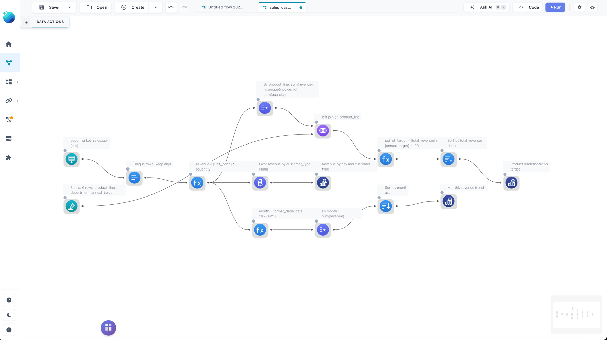
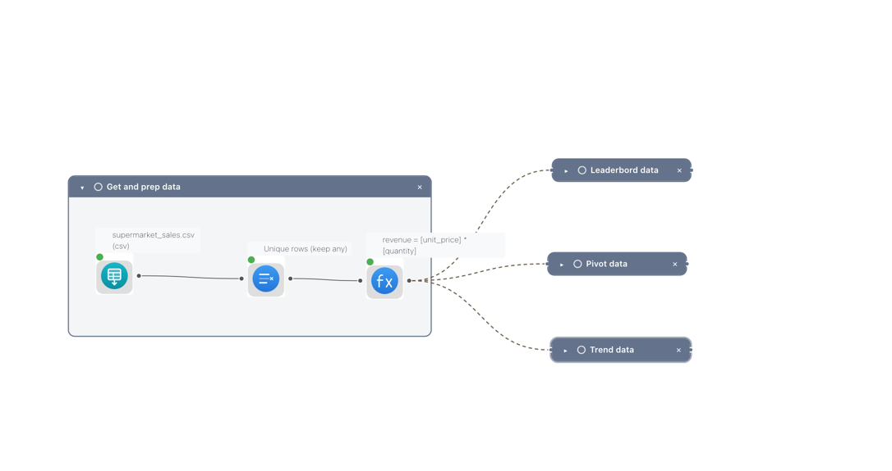
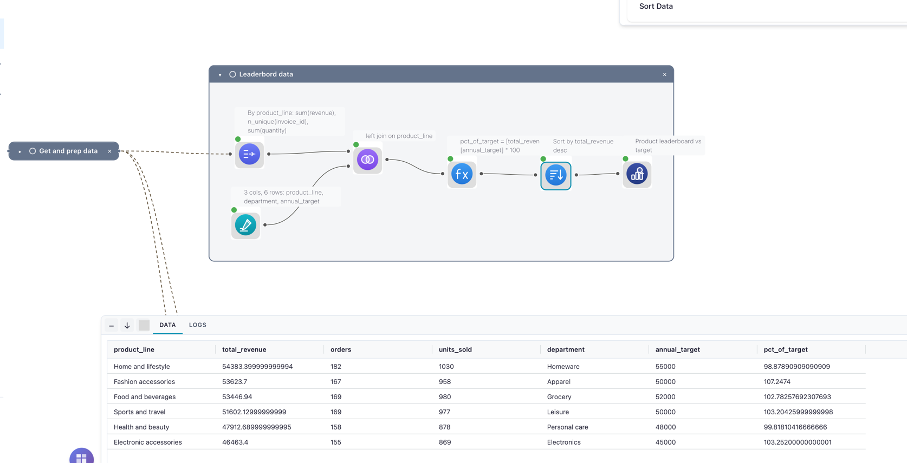
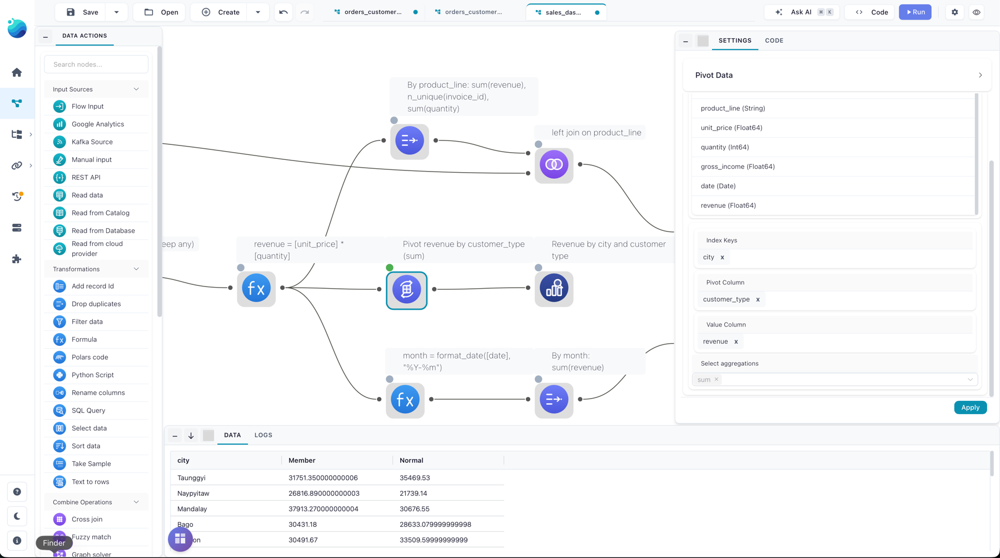
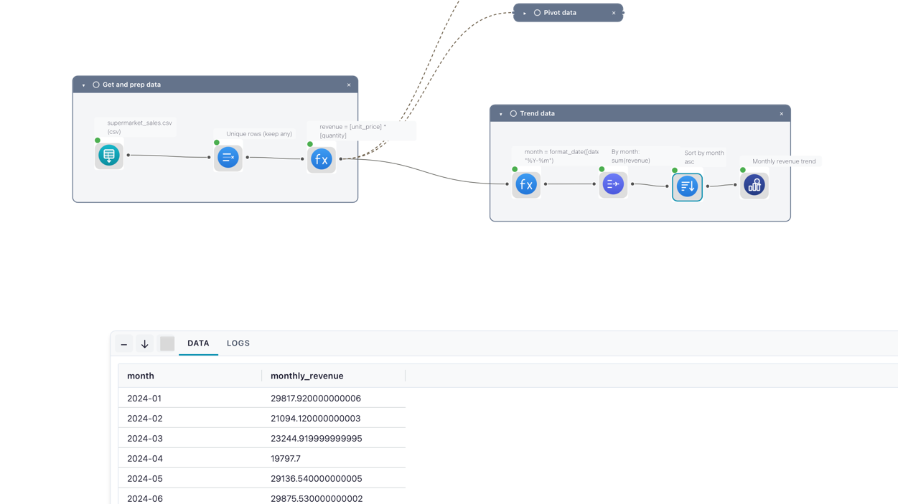
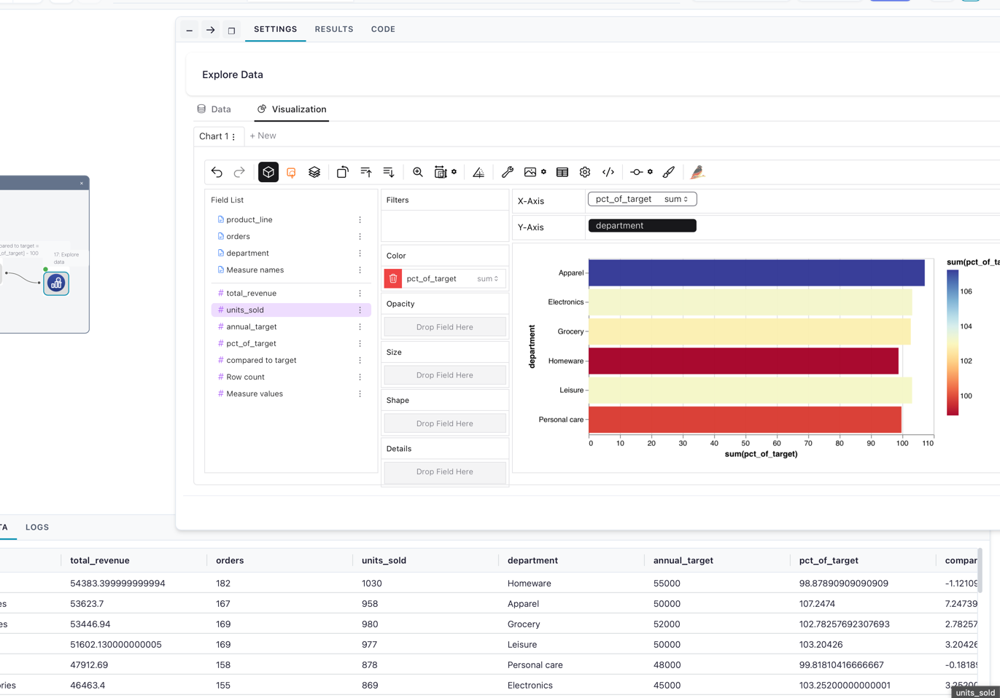
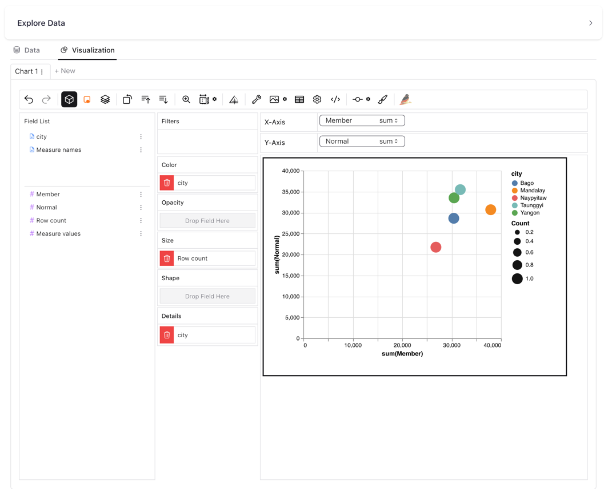
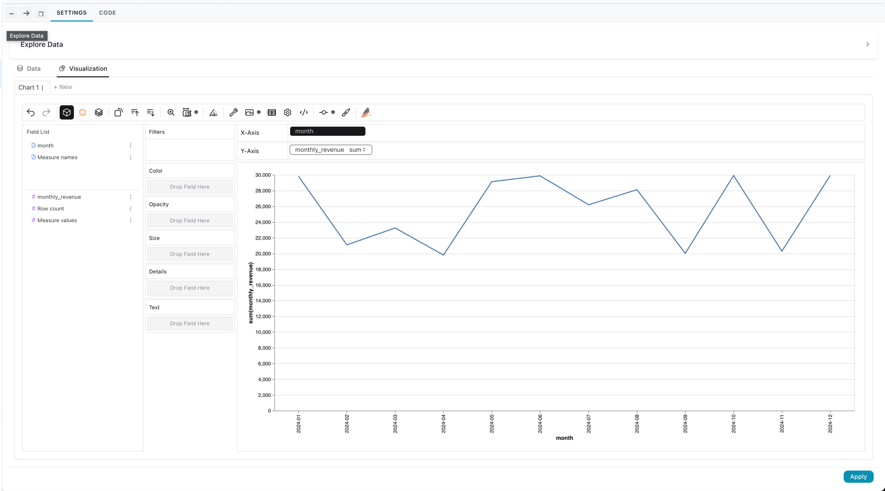

Build a sales dashboard from one cleaned table
This example cleans a raw sales export once, then forks into three views: a product leaderboard measured against per-line revenue targets, a revenue matrix by city and customer type, and a monthly revenue trend. It's for analysts who have outgrown a single summary and want several angles on the same data without repeating the cleaning each time. It builds on the five-node sales pipeline; read that one first if branching flows are new to you.
Flow: sales_dashboard.yaml ·
In-app: Create → From template → "Sales dashboard: rank, pivot, and trend" · Data: data/templates/supermarket_sales.csv
See it: the finished dashboard on the canvas

The data
supermarket_sales.csv holds 1030 transaction rows for the 2024 calendar year — including 30 exact duplicate rows to clean up.
| Column | Meaning |
|---|---|
invoice_id |
Transaction identifier |
city |
Store city (Bago, Mandalay, Naypyitaw, Taunggyi, Yangon) |
customer_type |
Member or Normal |
product_line |
Product category (six of them) |
unit_price |
Price per unit |
quantity |
Units sold |
gross_income |
Income for the line |
date |
Transaction date |
The flow
The flow shares one cleaned, enriched stream and branches it three ways.
Prepare the data (the trunk):
- Read data — reads
supermarket_sales.csv(file type CSV). Thedatecolumn is parsed as a real date. - Drop duplicates — Unique with strategy
anyand no key columns, removing the 30 fully-identical rows. - Formula — adds
revenue=[unit_price] * [quantity]. This node has three outgoing connections; each branch below reads from it.
See it: the enriched trunk and its three-way fork

Branch 1 — product leaderboard vs target:
- Group by — groups by
product_line, aggregatingrevenue(sum →total_revenue),invoice_id(n-unique →orders), andquantity(sum →units_sold). - Manual input — a six-row lookup giving each
product_lineadepartmentand anannual_target. - Join — a left join of the leaderboard (main input) to the lookup (right input) on
product_line, carryingdepartmentandannual_targetonto each row. - Formula — adds
pct_of_target=[total_revenue] / [annual_target] * 100. - Sort —
total_revenuedescending, so the best-selling line is on top. - Explore data — opens the ranking in the Graphic Walker explorer.
See it: the leaderboard joined to its targets

Branch 2 — revenue by city and customer type:
- Pivot — index
city, pivot columncustomer_type, valuesrevenue, aggregationsum. This reshapes the data into one row per city with aMemberand aNormalcolumn. - Explore data — opens the matrix.
See it: the city × customer-type pivot

Branch 3 — monthly trend:
- Formula — adds
month=format_date([date], "%Y-%m"), turning each date into a2024-01-style label. - Group by — groups by
month, summingrevenue→monthly_revenue. - Sort —
monthascending, so the months read in order. - Explore data — opens the trend.
See it: the monthly trend branch

Run it
- In your browser — open it in Flowfile Lite: the flow travels in the link and reads the sample CSV from its public URL. Click Run when it loads.
- From the template browser — Create → From template → "Sales dashboard: rank, pivot, and trend". The sample data is wired in; click Run.
- Download and open — grab
sales_dashboard.yamland open it in the designer. Its Read node points at the sample CSV's public URL, so it runs as-is with an internet connection — or repoint it at a local copy. - Headless — once saved with a real data path, run it from the command line:
flowfile run flow path/to/your_flow.yaml
The result
Product leaderboard vs target (Branch 1), over the deduplicated rows:
product_line |
total_revenue |
orders |
units_sold |
department |
annual_target |
pct_of_target |
|---|---|---|---|---|---|---|
| Home and lifestyle | 54383.40 | 182 | 1030 | Homeware | 55000 | 98.88 |
| Fashion accessories | 53623.70 | 167 | 958 | Apparel | 50000 | 107.25 |
| Food and beverages | 53446.94 | 169 | 980 | Grocery | 52000 | 102.78 |
| Sports and travel | 51602.13 | 169 | 977 | Leisure | 50000 | 103.20 |
| Health and beauty | 47912.69 | 158 | 878 | Personal care | 48000 | 99.82 |
| Electronic accessories | 46463.40 | 155 | 869 | Electronics | 45000 | 103.25 |
See it: the leaderboard charted in Graphic Walker

Revenue by city and customer type (Branch 2):
city |
Member |
Normal |
|---|---|---|
| Bago | 30431.18 | 28633.08 |
| Mandalay | 37913.27 | 30676.55 |
| Naypyitaw | 26816.89 | 21739.14 |
| Taunggyi | 31751.35 | 35469.53 |
| Yangon | 30491.67 | 33509.60 |
See it: the revenue matrix charted

Monthly trend (Branch 3) runs from 2024-01 at 29817.92 to 2024-12 at 29917.37, one row per month.
See it: the monthly trend line

In Python
The same three views with the FlowFrame API — clean once into base, then derive each view from it. Every source is built into one graph (note flow_graph=graph on the read and the lookup), so ff.open_graph_in_editor(graph) opens all three branches back in the visual editor:
import flowfile as ff
SALES = "https://raw.githubusercontent.com/edwardvaneechoud/flowfile/main/data/templates/supermarket_sales.csv"
# One graph holds every node, so all three views land in a single flow you can open.
graph = ff.create_flow_graph()
# Clean and enrich once — every view below reads from this.
base = (
ff.read_csv(SALES, flow_graph=graph)
.unique()
.with_columns((ff.col("unit_price") * ff.col("quantity")).alias("revenue"))
)
# A small lookup: each product line's department and annual revenue target.
# Passing flow_graph=graph keeps it on the same graph, so the join below doesn't fork a new one.
targets = ff.from_dict(
{
"product_line": [
"Home and lifestyle", "Fashion accessories", "Food and beverages",
"Sports and travel", "Health and beauty", "Electronic accessories",
],
"department": ["Homeware", "Apparel", "Grocery", "Leisure", "Personal care", "Electronics"],
"annual_target": [55000, 50000, 52000, 50000, 48000, 45000],
},
flow_graph=graph,
)
# View 1 — product leaderboard, joined to targets and ranked by revenue.
products = (
base.group_by("product_line")
.agg(
ff.col("revenue").sum().alias("total_revenue"),
ff.col("invoice_id").n_unique().alias("orders"),
ff.col("quantity").sum().alias("units_sold"),
)
.join(targets, on="product_line", how="left")
.with_columns((ff.col("total_revenue") / ff.col("annual_target") * 100).alias("pct_of_target"))
.sort("total_revenue", descending=True)
)
# View 2 — revenue matrix: one row per city, one column per customer type.
city_matrix = base.pivot(on="customer_type", index="city", values="revenue", aggregate_function="sum")
# View 3 — monthly revenue trend.
monthly = (
base.with_columns(ff.col("date").dt.strftime(format="%Y-%m").alias("month"))
.group_by("month")
.agg(ff.col("revenue").sum().alias("monthly_revenue"))
.sort("month")
)
# All three branches live in `graph` — open the whole flow in the visual editor:
# ff.open_graph_in_editor(graph)
Variations
- Pull targets from elsewhere — the targets live inline in a Manual Input here; replace it with a Read node (a spreadsheet, or a database table) to keep the Join wired to real, maintained targets.
- Change the pivot axes — swap
customer_typeforproduct_lineon the Pivot node to see each product's revenue per city. - Trend a different measure — point Branch 3's Group by at
gross_incomeorquantityinstead ofrevenue. - Persist a view — replace any Explore data node with a Catalog Writer to save that view as a catalog table, then chart it with a visualization.